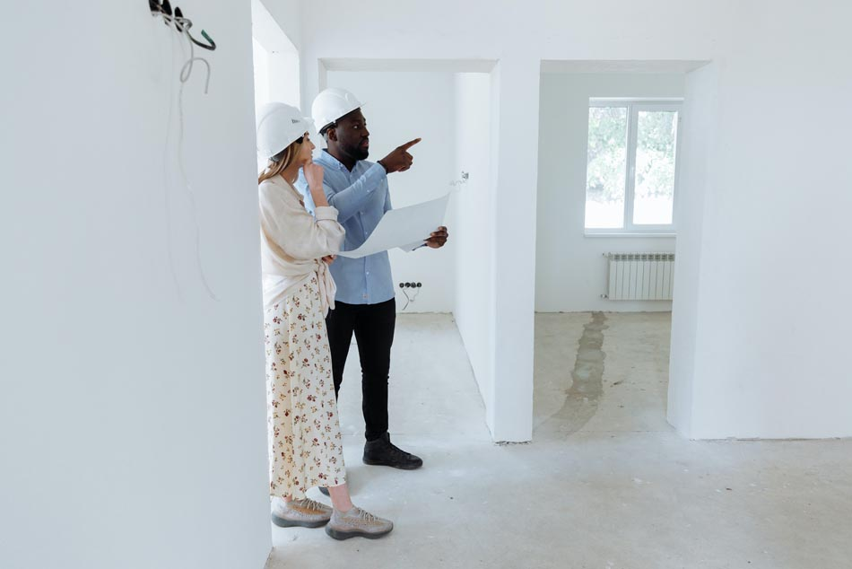

When it comes to finding a commercial real estate broker in Austin, you'll want to make sure you find someone who is experienced and knowledgeable about the Austin market. You should also look for a broker willing to negotiate on your behalf and with a good track record of successfully completing transactions. With so many brokers to choose from, how do you know who is the best for your needs?
When looking for a commercial real estate broker, it's important to find one that has the experience and expertise to help you find the right property and negotiate the best deal. Here are some things to look for:
When interviewing brokers, ask them about their experience, network of contacts, and any professional organizations they belong to. Also, ask them how they would go about finding the right property for your needs and negotiating the best possible deal.
If you're looking for Austin commercial real estate brokers, contact Austin Tenant Advisors today. Their experienced team can help you find the right property and negotiate the best terms.
When looking for a broker to help you with your commercial real estate needs, it is important to find one that is the best fit for you. Here are a few tips on how to find the best broker for your needs:
Talk to other business owners in Austin and see who they recommend. Chances are, they’ve worked with a broker before and can give you some good insights.
It is important to do your research before selecting a broker. This means researching different brokers and their specialties, as well as reading reviews from past clients. This will help you determine which brokers are the best fit for your specific needs.
Once you’ve narrowed down your list, get references from each broker. These should be clients who have worked with the broker recently and can attest to their level of service.
Once you have narrowed down your list of potential brokers, be sure to interview them all before making a decision. This will give you a chance to ask them questions about their experience, what they can offer you, and what their fees are. It is also important to make sure you feel comfortable working with them.
After interviewing all of the potential brokers, it is important to select the one that is the best fit for you and your needs. This may take some time, but it is worth it in the end when you have the perfect broker working for you.
In the end, you’ll have to go with your gut feeling. If you don’t feel comfortable with a broker, then they’re probably not the right fit for you.
Finding the right commercial real estate broker in Austin doesn’t have to be difficult. Just follow these tips and you’ll be well on your way to finding the perfect match for your business.
When it comes to commercial real estate, there can be a lot of confusion and frustration for those who are not familiar with the process. This is where a good commercial real estate broker comes in. A broker will have the expertise and knowledge to help navigate you through the process and find the best property for your needs.
Some of the benefits of working with a broker include:
If you're thinking of leasing or buying commercial property in Austin, working with a broker is a smart decision. They will be able to save you time and money while helping you find the perfect property for your business.
When working with a commercial real estate broker, it is important to be prepared and organized. Here are some tips on how to work with a commercial real estate broker:
Working with a commercial real estate broker can be a great way to find the perfect property for your business. By following these tips, you can make the process go smoothly and find the right property for your needs.
When looking for a broker to help you with commercial real estate, it is important to keep in mind that they work for commission. This means that they will want to get the best deal possible for their client, which may not always be you. Here are a few tips for negotiating with brokers:
By following these tips, you should be able to negotiate a fair deal with your commercial real estate broker. Remember that they are trying to make a living, so don't be afraid to ask for what you want. With a little patience and perseverance, you should be able to find a great property at a price that works for you.
When choosing a commercial real estate company in Austin, it's important to find one that is reputable and has experience managing properties in Austin. Contact Austin Tenant Advisors today. They offer a range of services, such as lease administration, maintenance, and marketing. Give them a call and get started.
Copyright © 2022 | How To Find The Best Commercial Real Estate Broker In Austin